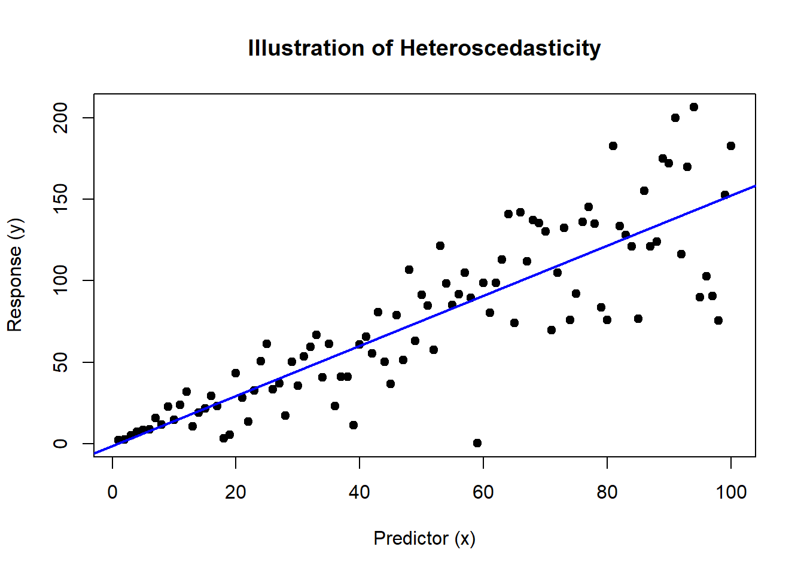

Chapter 9 Robust Standard Errors: Tackling Heteroscedasticity
When diving into regression analysis, one common assumption we make is that of homoscedasticity—that is, the variance of the residuals is constant across all levels of the independent variable. However, real-world data often violates this assumption, exhibiting heteroscedasticity, where the variance of the residuals increases or decreases along with the independent variable. This can distort standard error estimates and lead to misleading conclusions.
9.1 Visualizing Heteroscedasticity
First, let’s visualize what heteroscedasticity looks like and then see how it affects the results of Ordinary Least Squares (OLS) regression.
set.seed(42)
# Generate heteroscedastic data
x <- 1:100
y <- 1.5 * x + rnorm(100, sd = .5 * x) # Increasing variance
# Fit OLS model
ols_model <- lm(y ~ x)
# Plot the data and OLS fit
plot(x, y, main = "Illustration of Heteroscedasticity", xlab = "Predictor (x)", ylab = "Response (y)", pch = 19)
abline(ols_model, col = "blue", lwd = 2)
The plot will display a trumpet-shaped pattern of variance increasing with the predictor, which is a classic indication of heteroscedasticity.
9.2 Addressing Heteroscedasticity with Robust Standard Errors
Robust standard errors provide a way to correct the standard errors of your model coefficients in the presence of heteroscedasticity, allowing for more reliable statistical inference.
library(sandwich)
library(lmtest)
# Calculate robust standard errors
robust_se <- coeftest(ols_model, vcov = vcovHC(ols_model, type = "HC1"))
robust_se##
## t test of coefficients:
##
## Estimate Std. Error t value Pr(>|t|)
## (Intercept) -1.3589 3.7588 -0.3615 0.7185
## x 1.5372 0.1030 14.9250 <2e-16 ***
## ---
## Signif. codes: 0 '***' 0.001 '**' 0.01 '*' 0.05 '.' 0.1 ' ' 1This code uses the sandwich package to calculate heteroscedasticity-consistent (HC) standard errors, often referred to as robust standard errors. The lmtest package is used to test coefficients using these robust standard errors.
9.2.1 Observations from the Analysis
The output will compare the original OLS standard errors with the robust ones. You’ll typically find that the robust standard errors are larger, reflecting the increased uncertainty in the estimates due to heteroscedasticity. By using these adjusted standard errors, we can maintain the reliability of our confidence intervals and hypothesis tests even when the homoscedasticity assumption fails.
9.3 Math Behind Robust Standard Errors
To fully appreciate the robustness offered by these methods, let’s delve into the mathematics behind robust standard errors, starting from the basics and building up to more complex formulations.
9.3.1 Basic Formulation
In classical linear regression, the variance-covariance matrix of the estimators is given by:
\[ \text{Var}(\hat{\beta}) = (X^TX)^{-1} \sigma^2 \]
where \(X\) is the matrix of predictors (including a column of ones for the intercept), \(\hat{\beta}\) are the estimated coefficients, and \(\sigma^2\) is the variance of the error term.
9.3.2 Robust Standard Errors
When the homoscedasticity assumption does not hold, this formula does not provide a reliable estimate of the variance. Robust standard errors adjust this by estimating a different variance-covariance matrix:
\[ \text{Var}(\hat{\beta})_{\text{robust}} = (X^TX)^{-1} (X^T S X) (X^TX)^{-1} \]
It is pretty clear why this is called a sandwich estimator, with the bread \((X^TX)^{-1}\) and the meat \((X^T S X)\) Here, \(S\) varies depending on which estimator the user selects.
9.3.3 Heteroscedasticity-Consistent Estimators (HC)
- HC0 (White’s estimator):
- This is the basic heteroscedasticity-consistent estimator proposed by White. It does not include any adjustments for small sample sizes and may underestimate standard errors in smaller samples.
- HC1:
- This version adjusts HC0 by multiplying it by a degrees of freedom correction factor \(\frac{n}{n-k}\), where \(n\) is the number of observations and \(k\) is the number of predictors. This adjustment helps mitigate the downward bias in standard error estimation typical in smaller samples.
- HC2:
- HC2 further modifies HC1 by incorporating leverage (the influence of individual data points on the regression estimates) into the adjustment. This can be particularly useful in samples where certain observations have high leverage.
- HC3:
- Often recommended for use in smaller samples, HC3 adjusts the residuals by a factor that accounts for both leverage and the number of parameters. This can provide more protection against influential observations in small samples.
- HC4:
- Introduced by Cribari-Neto, HC4 adjusts residuals based on their leverage and the cubic root of leverage, offering even more robustness in scenarios where certain observations are very influential.
- HC4m (Modified HC4):
- This is a modification of HC4 that includes a slight relaxation in the leverage adjustment, making it less aggressive in down-weighting observations with high leverage.
- HC5:
- HC5 is an extension of HC4m that modifies the adjustment factor further, typically leading to larger standard errors for observations with the highest leverage, thus providing an even more conservative estimate.
9.3.4 Choosing the Right Estimator
- For larger datasets where the impact of any single outlier is diluted, simpler estimators like HC0 or HC1 might be sufficient.
- In smaller samples, or when data points with high leverage are a concern, HC3 or even HC4 and beyond can provide more reliable estimates by more aggressively adjusting for these issues.
9.4 Implementing in R
As shown earlier, the sandwich and lmtest packages in R make these calculations straightforward, allowing you to focus on interpretation rather than computation:
# Calculate robust standard errors (HC1)
robust_se <- coeftest(ols_model, vcov = vcovHC(ols_model, type = "HC1"))This implementation directly computes the robust standard errors using the HC1 estimator, providing you with adjusted standard errors that account for heteroscedasticity.
9.4.1 Ending Thoughts
Robust standard errors are essential for ensuring the reliability of statistical inferences, particularly when the assumption of equal variance across observations is violated. Understanding the underlying equations not only enriches your knowledge but also enhances your ability to critically evaluate the robustness of your regression analyses.